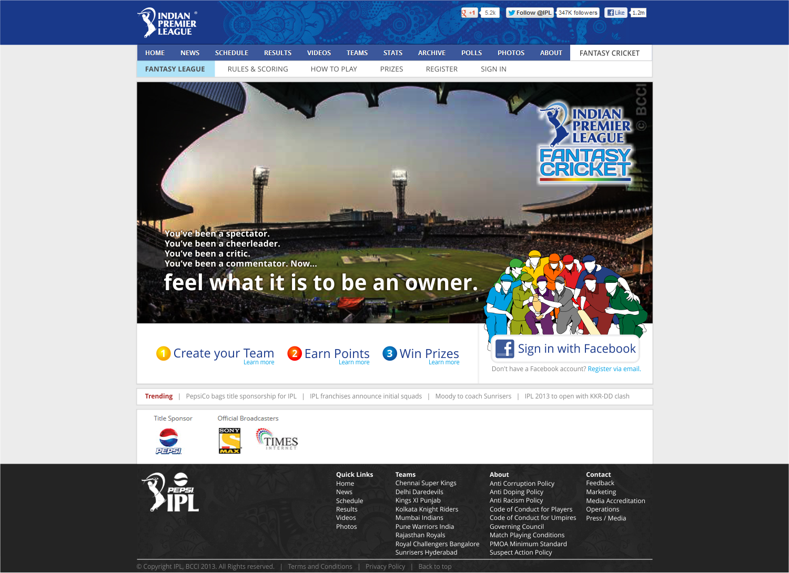
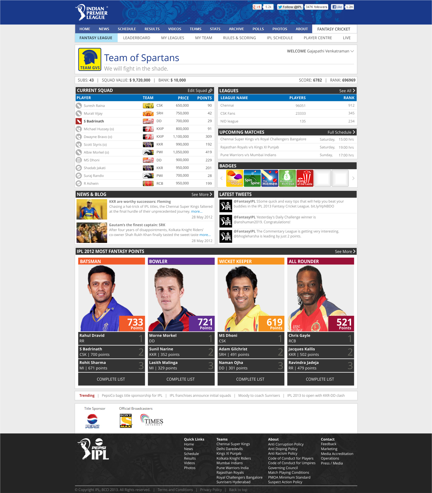
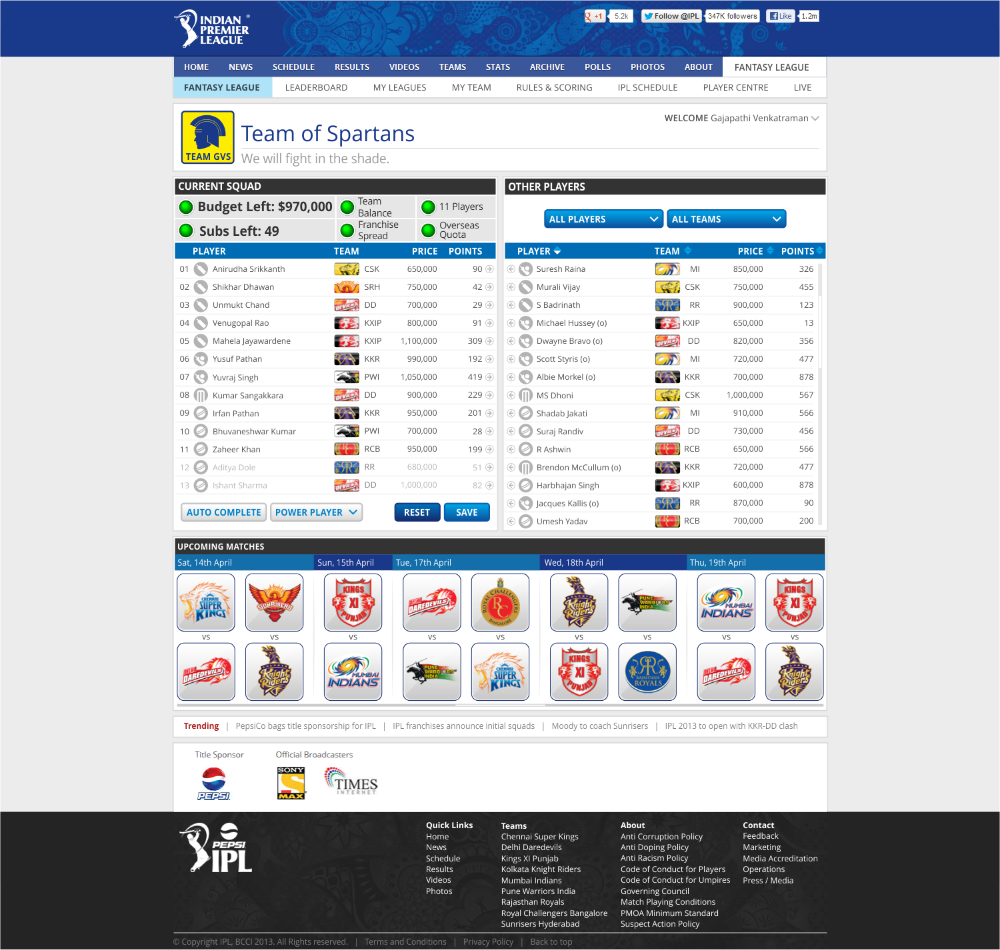
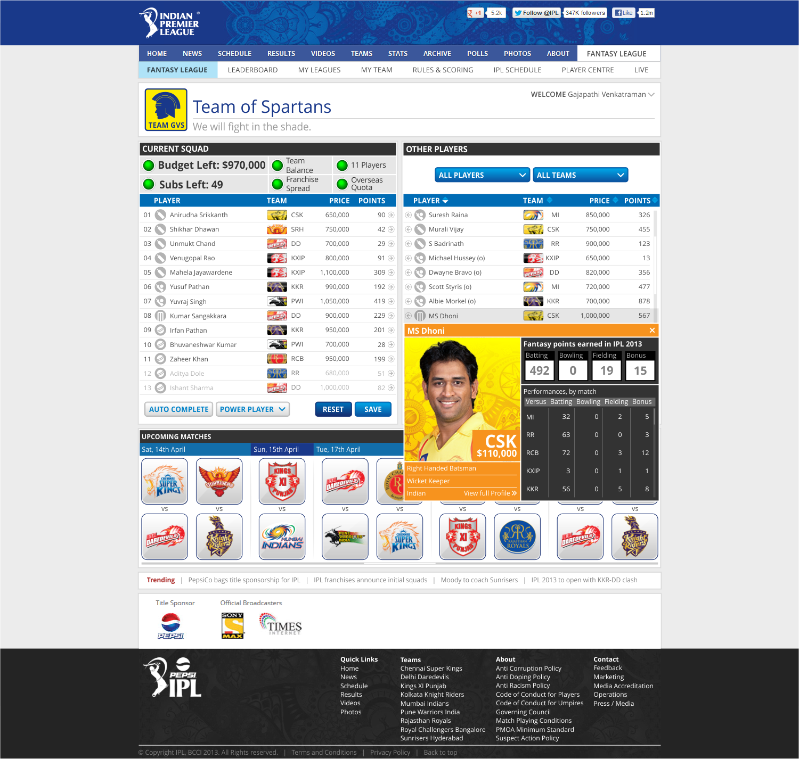
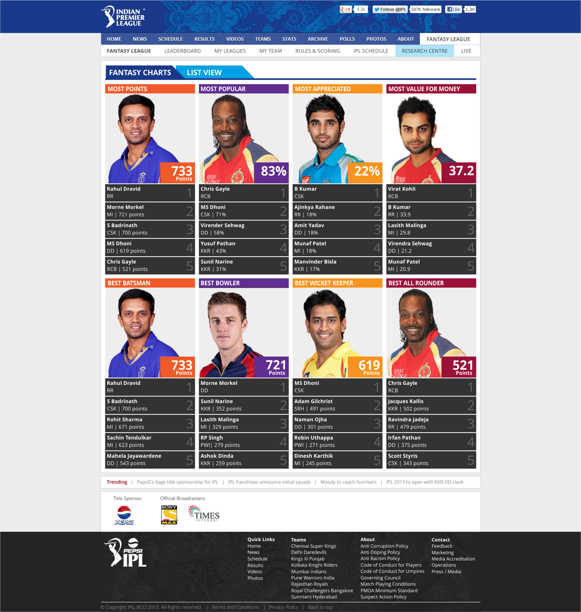
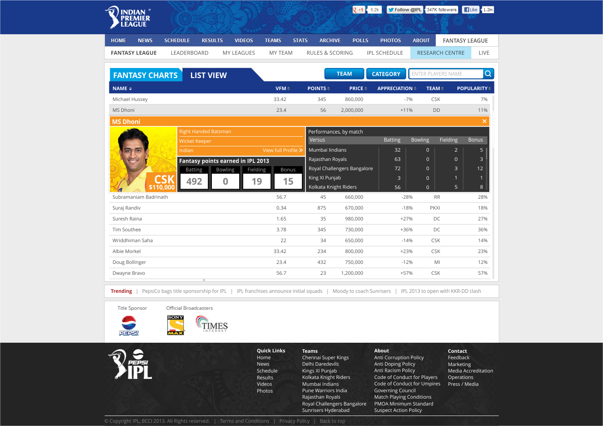

BACK TO WORK
BACK TO WORKOfficial IPL Fantasy League
The official fantasy cricket - a game that gives the fun of being an IPL team owner - developed for BCCI. People can create their virtual XI and earn points based on players’ actual performances. Deeply integrated with social networks, it also lets people create their own leagues and play among their friends . Over 500,000 users in 2 months.





